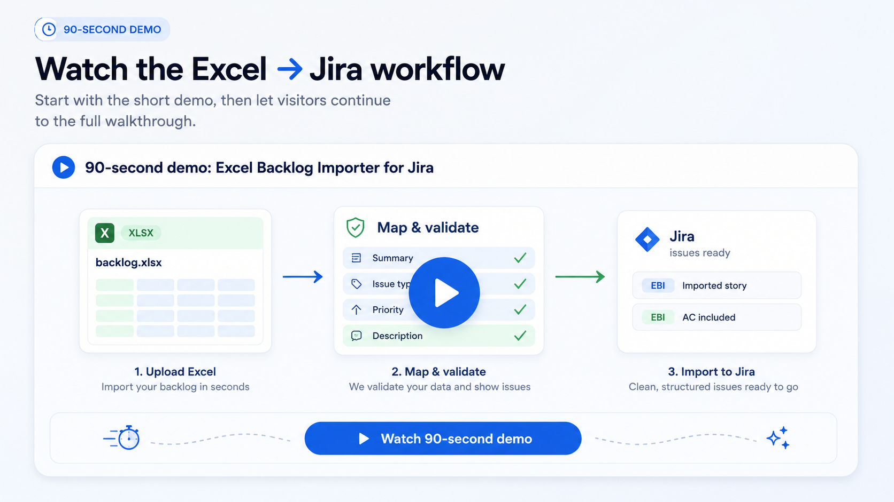

CSV preparation eats time
Jira's native import works best when the data is already clean and CSV-ready. Real handovers rarely are.
Receive scope, estimates, tasks, requirements, discovery output or client handovers in Excel? Upload the workbook, map columns to Jira fields, build descriptions from multiple columns, preserve hierarchy, validate every row, then create or update selected Jira issues safely.
Free trial and billing are handled by Atlassian Marketplace.
Watch the short demo first. If you want the full feature tour, continue with the longer walkthrough.
Full walkthrough Longer product tour for admins and evaluators who want the full setup flow.
Client-approved offers, discovery sheets, task lists, estimates and requirement handovers often arrive as real-world Excel workbooks: multiple columns, messy values, notes, acceptance criteria and hierarchy hints. The hard part is moving that workbook into Jira without losing structure, creating duplicates or turning the upload into a manual copy-paste task.
Jira's native import works best when the data is already clean and CSV-ready. Real handovers rarely are.
Descriptions, acceptance criteria and estimates get lost or pasted into the wrong place.
Every updated Excel file can mean new duplicates, missed changes and another round of manual checking.
This app was built for the moment when a team receives approved work in Excel and needs it in Jira. Instead of rebuilding the spreadsheet as CSV or copying each row by hand, use the workbook as the starting point and turn it into reviewed Jira issues.
Turn scoped rows, estimates and notes into Jira work items.
Move structured workshop findings into Jira without rewriting them.
Validate incoming workbook data before it touches Jira.
Handle repeated uploads without losing track of existing issues.
Use the Excel file you already have. No need to rebuild it as CSV first.
Select the sheet and the row that contains column names.
Reuse mappings for repeated imports.
Combine business context, acceptance criteria, technical notes and estimates into a structured description.
Review required fields, value problems, hierarchy and duplicates before anything changes in Jira.
Import only the rows you approve and keep an import report.
Upload XLSX/XLS workbooks instead of preparing CSV files first.
Save mappings and reuse them when similar files come back.
Build Jira descriptions from multiple Excel columns.
Clean and normalize values before they become Jira field values.
Preserve backlog structure when the source file contains hierarchy hints supported by the app's setup.
Review problems before creating or updating issues.
Reduce the risk of creating the same work again when the workbook returns.
Use repeated imports to update selected Jira issues when the app can match previously imported rows.
See what was created, updated, skipped or failed after the import.
Use the illustrations to understand the story, then check real product screens for the setup, validation and report flow.
Select the sheet and header row before mapping Excel columns to Jira fields.
Combine multiple workbook columns into one structured Jira Description.
Check row-level messages and selected rows before the final import action.
Review what was created, updated, skipped or failed after the import.
Uploading an Excel file is not the same as importing it. Use the app to configure mapping, validate rows and review the result before you create or update Jira issues. Jira changes happen only after the final import action.
Use Jira CSV import when your data is clean, one-off and already prepared for an admin-led import. Use Excel to Jira Importer & Uploader when your Jira work starts as a real Excel workbook and you need mapping, cleanup, hierarchy, validation, duplicate handling and repeatable imports.
| Need | Jira CSV import | Excel to Jira Importer & Uploader |
|---|---|---|
| Use the original workbook | Requires CSV preparation | Upload XLSX/XLS directly |
| Repeat similar imports | Reconfigure each time | Reuse saved setup |
| Build rich descriptions | Prepare text manually | Combine multiple columns |
| Clean messy values | Clean before import | Clean during setup |
| Review before changes | Admin-oriented import flow | Validate and select rows before import |
| Handle repeated files | Higher duplicate risk without separate tracking | Duplicate handling and update flow for previously imported rows |
Many PMs, Scrum Masters and Business Analysts can see the problem but cannot install Marketplace apps themselves. Give them a clear next step instead of letting them bounce.
Excel to Jira Importer & Uploader was built by a software delivery practitioner with 20 years of experience in software-house and consulting projects. The goal is simple: reduce the manual gap between formal Excel handovers and the Jira issues your team actually works from.
No. Uploading the workbook is only the beginning of the setup. You can map fields, validate rows and review the import before creating or updating Jira issues.
No. The app is designed to work with Excel workbooks directly.
Yes. Use Description Builder to combine columns such as business context, acceptance criteria, technical notes and estimates into a structured Jira description.
Yes, when the source workbook contains the structure needed by the app's hierarchy setup and Jira configuration allows the resulting issue relationships.
Yes, when you use a repeated import mode that updates existing rows and the app can match those rows to previously imported issues.
Use the "Copy message for Jira admin" section above and ask the person who manages Marketplace apps on your Jira site to approve the trial.
Trial, installation and billing are handled by Atlassian Marketplace.
Yes. The full walkthrough video is available from the demo section above.
Try it on the kind of workbook your team already receives: offer rows, scope notes, task lists, estimates, acceptance criteria and handover data.